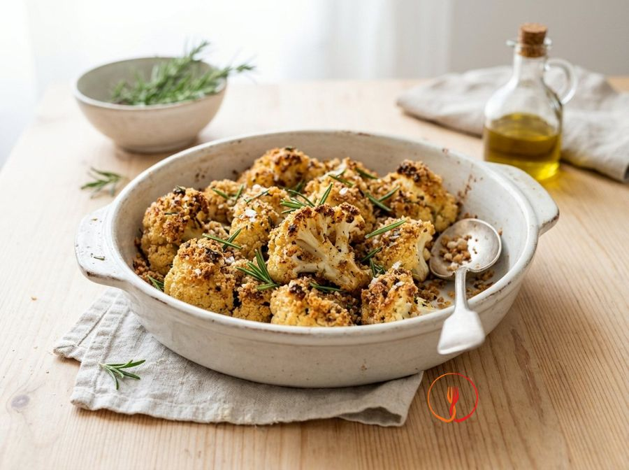

Cavolfiore al forno con erbe aromatiche
Un contorno leggero e profumato che trasforma il cavolfiore in una prelibatezza croccante grazie alla panatura aromatica. Perfetto per accompagnare secondi piatti di pesce o legumi, valorizzando una verdura di stagione economica e versatile.
Ingredienti
- Cavolfiore (al netto degli scarti)800 g
- Olio extravergine d'oliva40 ml
- Pangrattato integrale40 g
- Sale fino5 g
- Pepe nero1 g
- Rosmarino fresco2 rametti
- Timo fresco3 rametti
- Aglio1 spicchio
- Scorza di limone biologico5 g
Allergeni
Glutine
Procedimento
- Preriscaldare il forno a 200°C in modalità ventilata per garantire una doratura rapida e uniforme delle verdure.
- Mondare il cavolfiore eliminando le foglie verdi e la base del torsolo, quindi ricavare delle cimette di dimensioni simili (circa 3 cm).
- Lavare le cimette sotto acqua corrente e asciugarle perfettamente con un canovaccio pulito; questo passaggio è fondamentale per ottenere una consistenza croccante e non bollita.
- Sminuzzare finemente al coltello gli aghi di rosmarino, le foglioline di timo e l'aglio privato dell'anima centrale per renderlo più digeribile.
- In una ciotola capiente, mescolare il pangrattato integrale con il trito di erbe, l'aglio, la scorza di limone grattugiata, il sale e il pepe.
- Aggiungere le cimette di cavolfiore nella ciotola e versare l'olio extravergine d'oliva, mescolando con le mani affinché ogni pezzo sia uniformemente velato di olio e panatura.
- Distribuire il cavolfiore su una teglia rivestita di carta forno, posizionando i pezzi ben distanziati tra loro per evitare che il vapore impedisca la formazione della crosticina.
- Infornare per circa 20-25 minuti, avendo cura di girare le cimette a metà cottura: il piatto è pronto quando i bordi risultano dorati e l'interno è tenero al morso.
- Sfornare e servire tiepido, controllando che il profumo del limone e delle erbe sia ben sprigionato, rendendo il contorno fresco e appetibile.
Valori nutrizionali (stima)
| Per porzione (223 g) | Per 100 g | |
|---|---|---|
| Energia | 678 kJ / 162.0 kcal | 304.0 kJ / 72.6 kcal |
| Proteine | 5.0 g | 2.2 g |
| Carboidrati | 14.0 g | 6.3 g |
| di cui zuccheri | – g | – g |
| Grassi | 10.0 g | 4.5 g |
| di cui saturi | – g | – g |
| Fibre | – g | – g |
| Sale | – g | – g |
Valori stimati con l'AI su dati medi CREA / USDA: sono indicativi e non sostituiscono il parere di un medico o di un nutrizionista.
Apri la ricetta nell'app per la lista della spesa, le schede ingredienti e i negozi vicini.